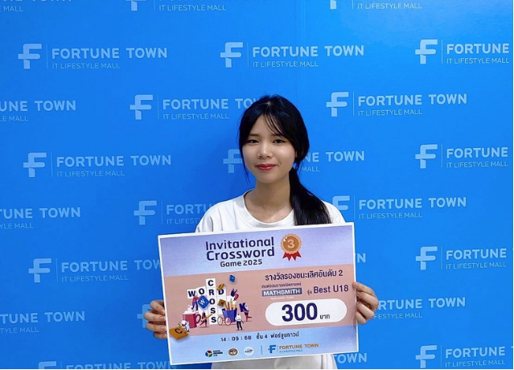
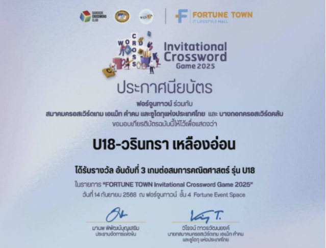
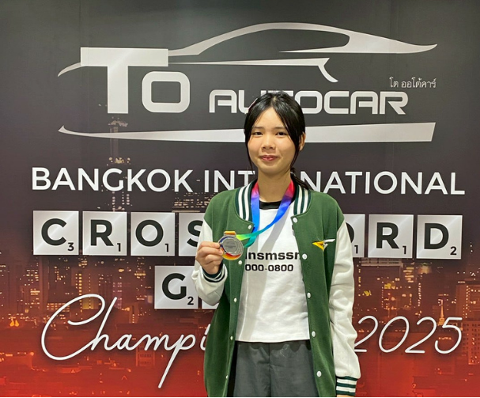
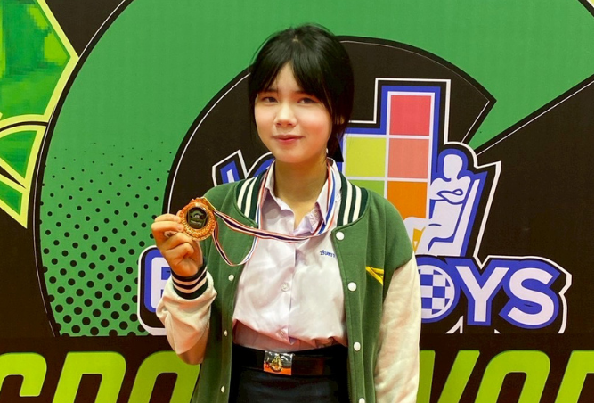
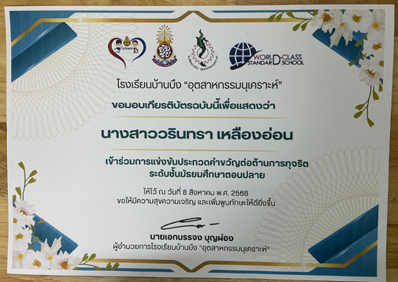
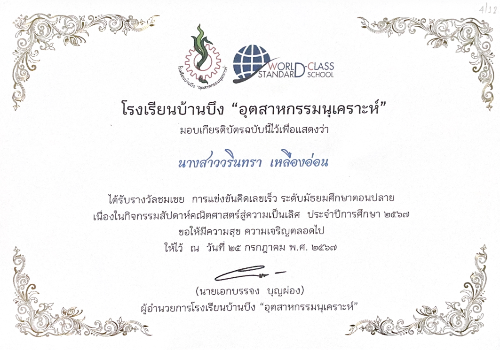

โรงเรียนบ้านบึง“อุตสาหกรรมนุเคราะห์”
โรงเรียนบ้านบึง“อุตสาหกรรมนุเคราะห์”
โรงเรียนบ้านบึง“อุตสาหกรรมนุเคราะห์”
โรงเรียนบ้านบึง“อุตสาหกรรมนุเคราะห์”
Certificates & Awards


เข้าร่วมการแข่งขัน ROBINSON Lifestyle World Youth Qualifying Thailand 2025 ซึ่งจัดโดย Bangkok Crossword Club และได้รับรางวัลรองชนะเลิศ เกมต่อสมการคณิตศาสตร์ รุ่นอายุไม่เกิน 18 ปี เป็นรางวัลที่สร้างความภาคภูมิใจและเป็นแรงผลักดันให้พัฒนาตนเองต่อไป


เป็นการแข่งขันที่ได้ทุ่มเทและพยายามอย่างเต็มความสามารถ สามารถก้าวผ่านความกดดันและพัฒนาตนเองได้มากขึ้น รู้สึกภาคภูมิใจในผลงาน และขอขอบคุณครอบครัว คุณครู และพี่น้องที่คอยสนับสนุนมาโดยตลอด


ได้รับรางวัลจากความตั้งใจ ความมุ่งมั่น และการฝึกฝนอย่างสม่ำเสมอ โดยสามารถแบ่งเวลาในการฝึกซ้อมควบคู่กับการเรียน ประสบการณ์ครั้งนี้ทำให้ได้เรียนรู้และพัฒนาตนเองมากยิ่งขึ้น


ได้รับรางวัลชนะเลิศระดับประเทศจากการแข่งขัน A-math ซึ่งเป็นผลจากความพยายามและการฝึกฝนอย่างต่อเนื่อง ทำให้ได้พัฒนาทักษะการคิดวิเคราะห์ การตัดสินใจ และการแก้ปัญหาอย่างเป็นระบบ


ความสำเร็จครั้งนี้เป็นอีกหนึ่งความภาคภูมิใจ จากจุดเริ่มต้นที่ยังขาดความมั่นใจ จนสามารถพัฒนาตนเอง และคว้ารางวัลถ้วยประธานมาได้ ประสบการณ์นี้ทำให้มีความมั่นใจ การตัดสินใจ และทักษะในการแข่งขันมากขึ้น รวมถึงได้รับกำลังใจและการสนับสนุนจากคนรอบข้างเสมอมา


เป็นหนึ่งในสนามการแข่งขันช่วงแรก ๆ ที่ได้เข้าร่วม แม้จะรู้สึกกดดัน แต่สามารถควบคุมความรู้สึกและทำหน้าที่ได้อย่างเต็มที่ ประสบการณ์ครั้งนี้ช่วยเสริมสร้างความมั่นใจและความกล้าในการแข่งขัน


เข้าร่วมการแข่งขันคิดเลขเร็ว ซึ่งมีทั้งการคิดเลขหลายรูปแบบ และการแก้สมการให้ถูกต้องและรวดเร็ว เป็นสนามแรกที่ได้ทดลองทักษะด้านการคิดเลขเร็ว และเป็นประสบการณ์ที่สร้างความภูมิใจและแรงบันดาลใจในการพัฒนาต่อไป


เข้าร่วมการแข่งขัน A-math และได้รับเหรียญรางวัลระดับสีทอง เป็นการแข่งขันครั้งแรกที่ทำให้ได้เปิดประสบการณ์ใหม่ ๆ และเห็นพัฒนาการของตนเองตั้งแต่วันแรกจนถึงวันที่ได้รับรางวัล
รวมผลงานและเกียรติบัตรจากการเรียน การแข่งขัน และกิจกรรมต่าง ๆ

เข้าร่วมการแข่งขันทดสอบความรู้คณิตศาสตร์ และได้รับรางวัลชนะเลิศระดับภาคตะวันออก

เข้าร่วมการแข่งขันแต่งคำขวัญเนื่องในวันคณิตศาสตร์ และได้รับรางวัลชนะเลิศ

เข้าร่วมการแข่งขันแต่งคำขวัญต่อต้านยาเสพติด เพื่อส่งเสริมความคิดสร้างสรรค์และการใช้เวลาว่างอย่างเหมาะสม

เข้าร่วมการแข่งขันคณิตคิดเร็ว และได้รับรางวัลชมเชย

เข้าร่วมการแข่งขันการแต่งกายในหัวข้อ "คณิตกับชีวิตประจำวัน" และได้รับรางวัลรองชนะเลิศลำดับที่ 2

เข้าร่วมการแข่งขัน A-math ในกิจกรรมสัปดาห์คณิตศาสตร์

เข้าร่วมการแข่งขันคณิตคิดเร็ว และได้รับรางวัลรองชนะเลิศลำดับที่ 2

เข้าร่วมการแข่งขันอัจฉริยภาพ และได้รับรางวัลรองชนะเลิศลำดับที่ 1

เข้าร่วมการแข่งขัน A-math และได้รับรางวัลรองชนะเลิศลำดับที่ 1